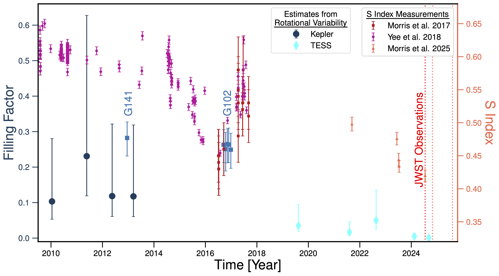
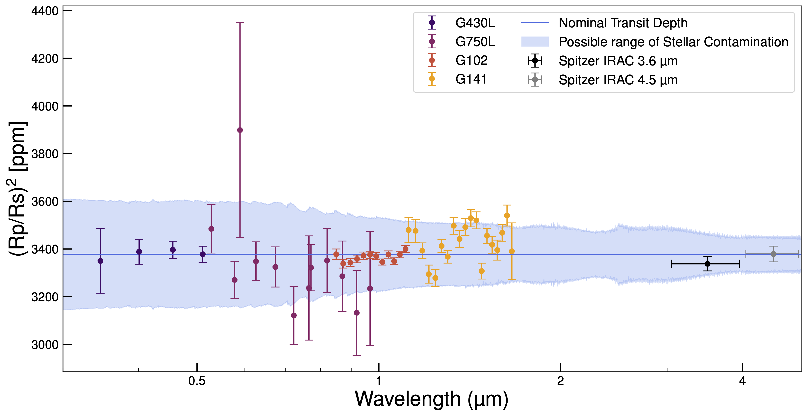

HST Legacy Archival Program Constraining Stellar Contamination in Transmission Spectroscopy
The HST Stellar Treasure Trove is a large effort to uniformly reprocess archival Hubble Space Telescope time-series spectroscopy of transiting exoplanets and quantify stellar and planetary signals in transmission spectra.
Grant: HST AR 17551 • Last updated: —
Spatially heterogeneous stellar photospheres (spots, faculae, and other active regions) imprint wavelength-dependent signals on measured transit depths. These stellar spectral imprints can bias inferred planetary radii, slopes, and molecular abundances—especially for planets orbiting active K and M dwarfs.
By leveraging the breadth of archival HST transit observations, the Stellar Treasure Trove provides uniform reductions and stellar-contamination constraints, enabling robust comparisons across targets and instruments and supporting interpretation of JWST spectra and future atmospheric surveys.
Quantify the impact of unocculted and occulted heterogeneity on transmission spectra, and provide contamination-aware products designed for downstream atmospheric inference.
Apply consistent reduction and modeling assumptions across a broad sample of HST time-series observations, producing a coherent library for population-level analysis.
Provide constraints and priors that inform JWST interpretation and guide observing strategies for characterizing small planets around active stars.
Prajwal Niraula, Benjamin V. Rackham, Julien de Wit, Daniel Apai, Mark S. Giampapa, David Berardo, and Chia-Lung Lin
In this first paper from the program, we use absolutely calibrated out-of-transit HST spectra of HAT-P-11 from STIS and WFC3 to constrain the star’s photospheric heterogeneity and assess its impact on transmission spectroscopy. The near-infrared WFC3 spectra strongly favor a two-component photosphere, with a dominant component near 4950 K and a cooler component near 3400 K covering roughly 26–33% of the visible stellar disk. The optical STIS spectra, by contrast, do not support reliable multi-component inferences, pointing to current limitations in stellar atmosphere models at optical wavelengths. Using the inferred spot properties, we show that plausible stellar contamination signals can reach amplitudes comparable to the spectral features measured for HAT-P-11 b, underscoring the need for contemporaneous stellar constraints when interpreting exoplanet transmission spectra.

Long-term activity evolution of HAT-P-11, comparing spot-covering fractions inferred from the HST/WFC3 spectra with independent estimates from Kepler and TESS rotational variability and with Ca II H&K S-index measurements from the literature. Together, these diagnostics show that HAT-P-11 was substantially more active during the HST era than in the more recent TESS/JWST era, indicating that the impact of stellar contamination is time dependent and likely smaller during later, more quiescent phases.

Observed transmission spectrum of HAT-P-11 b from HST and Spitzer compared with the plausible range of stellar contamination inferred from our stellar analysis. The shaded region shows that wavelength-dependent contamination from unocculted stellar heterogeneity can reach amplitudes comparable to the spectral features measured in transmission, reinforcing the need to account for the host star when interpreting atmospheric signals.